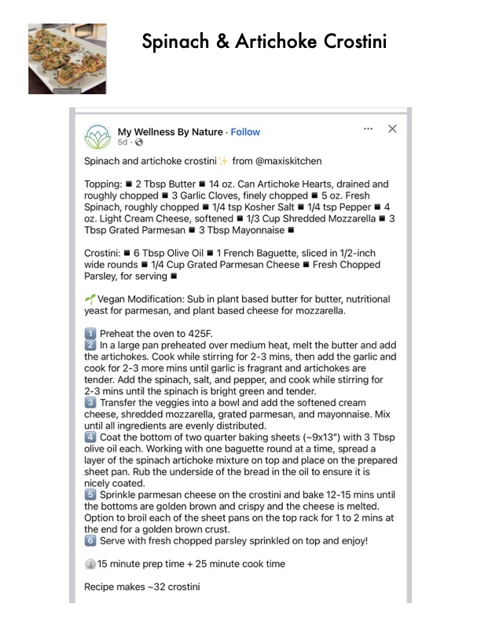

Spinach & Artichoke Crostini

Original cookbook page 703
Ingredients
- 2 tbsp butter
- 14 oz can artichoke hearts, drained and roughly chopped
- 4 garlic cloves, finely chopped
- 8 oz fresh spinach, roughly chopped
- 1/4 tsp kosher salt
- 1/4 tsp pepper
- 4 oz light cream cheese, softened
- 1/3 cup shredded mozzarella
- 1 tbsp grated Parmesan
- 3 tbsp mayonnaise
- 1 French baguette, sliced in 1/2-inch wide rounds
- 1/4 cup grated Parmesan cheese
- Fresh chopped parsley for serving
Instructions
- Preheat the oven to 425F. cook for 2-3 more mins until garlic is fragrant and artichokes Transfer the veggies into a bowl and add the softened cre Sprinkle parmesan cheese on the crostini and bake 12-15 Serve with fresh chopped parsley sprinkled on top and er
Recipe #703 from collection